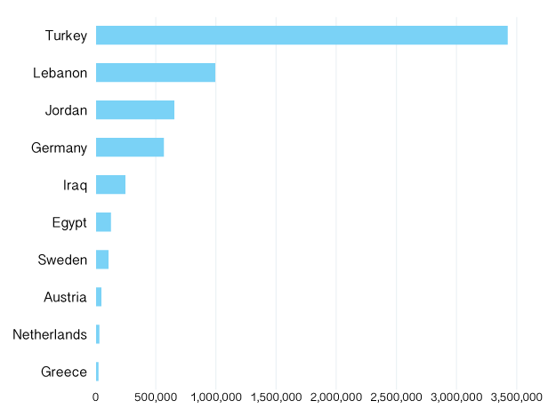
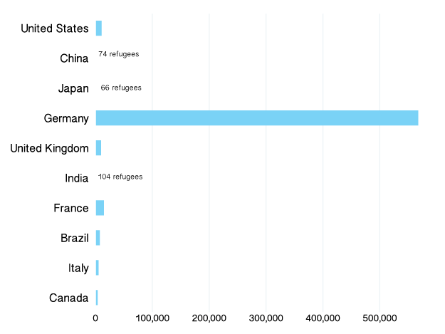
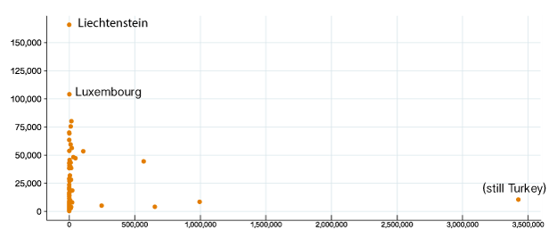
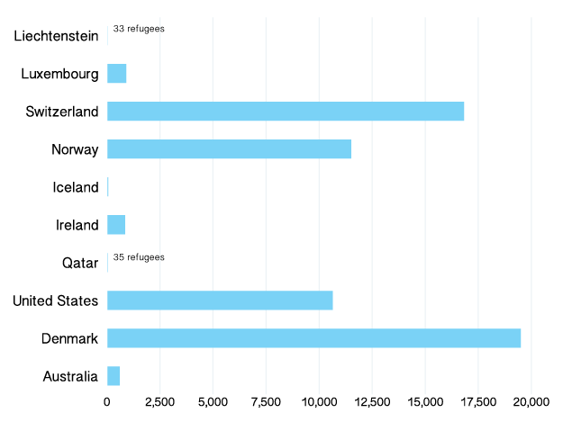

BY Matt Rehbein
Published July 28, 2018
The Syrian civil war has displaced millions of people since it began roughly seven years ago. Most of those forced from their homes remained in Syria, but millions have fled to other countries.
The majority of international Syrian refugees are in nearby countries. Turkey, Lebanon and Jordan host about 3.4 million, 1 million and 650,000, respectively, according to the UN Refugee Agency.
I wanted to explore how the world's wealthier nations -- a measure I'm defining for the purposes of this exercise by GDP and GDP per capita -- are responding to the sprawling Syrian crisis in terms of the number of refugees they are hosting. All of the data presented here are as of 2017.
First off, let's look at the 10 countries hosting the most Syrian refugees, regardless of their economic portfolios.
Syrian refugee population per country

SOURCE: UNHCR, World Bank
Now let's get some idea of the economic profile of the countries opening their doors to Syrian refugees.
GDP v Number of Syrian refugees hosted
The outliers here are the US, which hosted 10,640 Syrian refugees in 2017 and ranked number one in GDP, and Turkey, which hosted 3.4 million Syrian refugees last year and ranked 17th worldwide in GDP.

SOURCE: UNHCR, World Bank
Here's a closer look at just how many refugees live in the countries with the top-ten biggest economies, starting with the number-one ranked US and going down in order.
Number of Syrian refugees in top-ten GDP nations

SOURCE: UNHCR, World Bank
The distribution spreads out a bit when we shift to GDP per capita, but mostly it's the cast that changes.
GDP per capita v Number of Syrian refugees hosted

SOURCE: UNHCR, World Bank
And again a closer look at just how many Syrian refugees live in top-ten ranked countries by GDP per capita, again starting at number one and working our way down.
Number of Syrian refugees in top-ten GDP per capita nations

SOURCE: UNHCR, World Bank